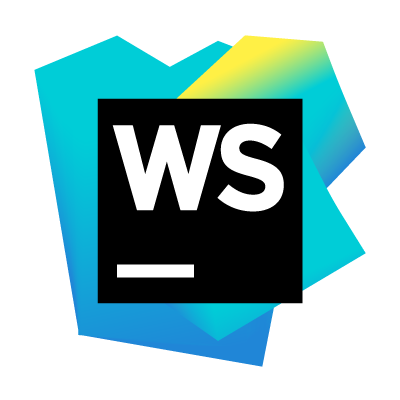
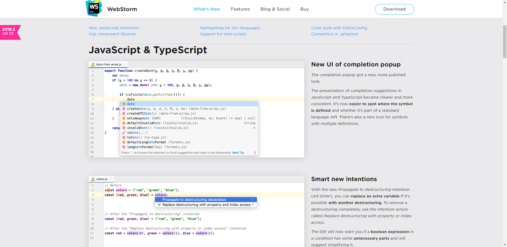

웹스톰이란(WebStrom)이란
웹스톰(WebStorm) 은 HTML 편집기가 포함된 자바스크립트 IDE(Intergrated Development Environment)로 IntelliJ IDEA 플랫폼 위에 구축되었고
비주얼 스튜디오나 이클립스와 같은 프론트엔드 개발에 최적화 된 통합개발환경을 제공한다

<2019년 9월 2일자 웹스톰(WebStorm) 웹사이트 화면>
Node.js, CoffeeScript, TypeScript, Dart, Jade, Sass, Less, Stylus 같은 최신 웹 트렌드를 지원하며 플랫폼에 유동적(Cross-platform)이어서 윈도우, 맥, 리눅스에서 동작한다.
웹개발, 특히 자바스크립트 친화적 프론트엔드 개발에 특화된 웹스톰은 HTML, CSS, javaScript, XML, VCS 작업, 웹 개발을 위한 여러 도구 (특히, IntelliJ IDEA의 모든 웹 관련 기능 상속) 등을 지원하는데 지원사양은 다음과 같다.
웹스톰 특징
-
JavaScript editor
- 지능형 코드 완성 (Intelligent Code Completion)
- 코드 검사 및 신속한 수정 옵션 (Code Inspection and Quick-fix Options)
- 코드 탐색 및 용도 검색 (Code Navigation and Usages Search)
- 코드 리팩토링 (Code Refactoring)
-
Debugging and Testing
- 강력한 자바스크립트 디버거 (Powerful JavaScript Debugger)
- 자바 스크립트 단위 테스트 (JavaScript Unit Testing)
웹스톰 주요기능
- Rename
- 단축키 : ^+T
- 지역 변수를 한번에 수정할 수 있는 기능이다.
- 변수를 일괄 수정함으로써 오타가능성을 줄여준다.
- Change Signature
- 단축키 : ^+T
- 지역 변수를 한번에 수정할 수 있는 기능이다.
- 변수를 일괄 수정함으로써 오타가능성을 줄여준다.
웹스톰 설치
다운로드 경로 : https://www.jetbrains.com/ko-kr/webstorm/download/#section=window